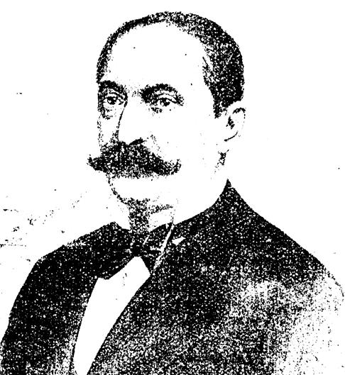

Dascălul de renume care ne-a dat... nume
Andrei Bârseanu s-a născut în 1858, la Dârste, lângă Brașov. Studiile le-a făcut la Brașov, apoi a plecat la Viena și Munchen, unde între 1878 și 1881, și-a definitivat studiile universitare. S-a alăturat organizației studențești „România Jună”.
În timpul studiilor de la Viena l-a cunoscut pe Jan Urban Jarník, viitorul filolog și filoromân de origine cehă, membru de onoare al Academiei Române.
A revenit în Transilvania, mai întâi la Brașov, unde a predat la liceul românesc. A devenit corector și apoi dirigent al școlilor superioare. S-a mutat la Sibiu, unde a fost numit director al învățământului. A editat revista „Școala și familia” în 1887. A devenit membru al Academiei Române și în 1912 a fost ales vicepreședinte. Cu un an înainte a fost ales președinte al ASTRA, funcție ce a deținut-o până în 1922. Tot în aceeași perioadă, a devenit director regional al școlilor.
În 1918 a devenit vicepreședinte al Marelui Sfat Național, iar mai apoi al Consiliului Dirigent de la Sibiu.
Andrei Bârseanu este autorul poeziei „Pe-al nostru steag e scris Unire”, ce a avut un real succes între români și mai ales între soldații români din Primul Război Mondial. Paralel cu activitatea din Transilvania a menținut legăturile cu intelectualitatea din România. Împreună cu Jarník a publicat lucrări de folclor românesc din Ardeal.
Andrei Bârseanu a lăsat generaţiilor de astăzi şi viitoare un mobilizator testament care trebuie executat de toţi cei care îşi iubesc neamul şi ţara. “A ne mulţumi cu rezultatele de până acum, oricât de strălucitoare ar fi ele şi a ne odihni pe laurii biruinţei, crezându-ne dispensaţi de orişice osteneală pentru viitor, ar fi cea mai mare greşeală pe care am putea-o face.”
Acest testament trebuie urmat din generaţie în generatie, dar cu deosebire de generaţiile de profesori şi elevi ai liceului nostru. Avem datoria de a-l urma cu sfinţenie pentru a ne face vrednici de numele patronului spiritual al acestei şcoli, fiindcă sufletul mare al lui Andrei Bârseanu veghează asupra noastră.
Târnaveni, 8 august 2003
Documentarea si redactarea: prof. Covrig Ionel
ANDREI BÂRSEANU
